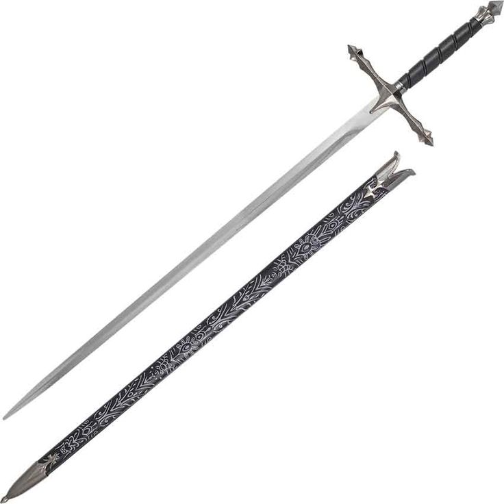
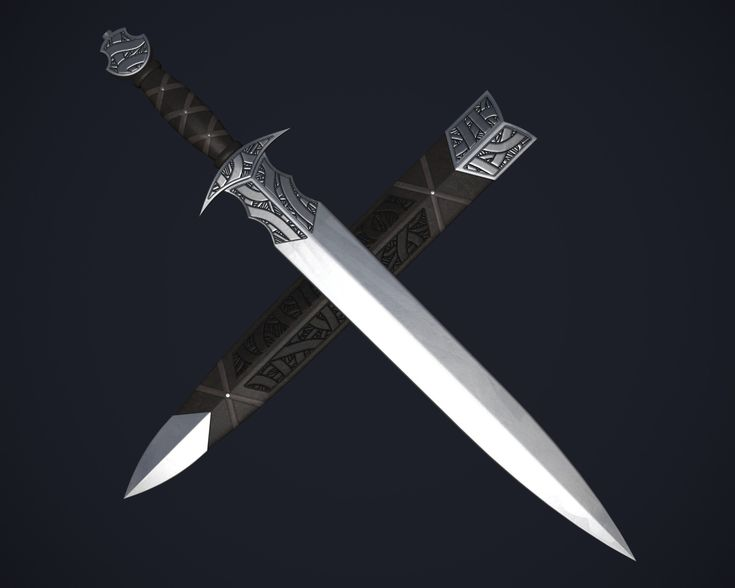
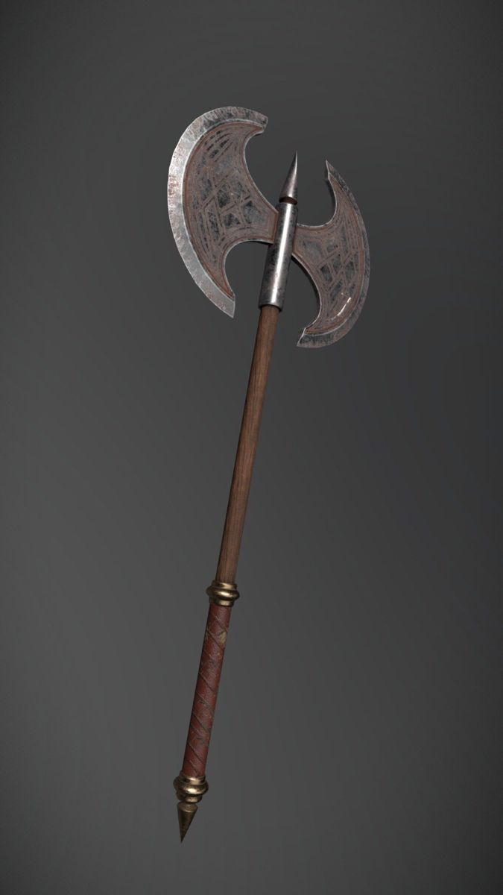
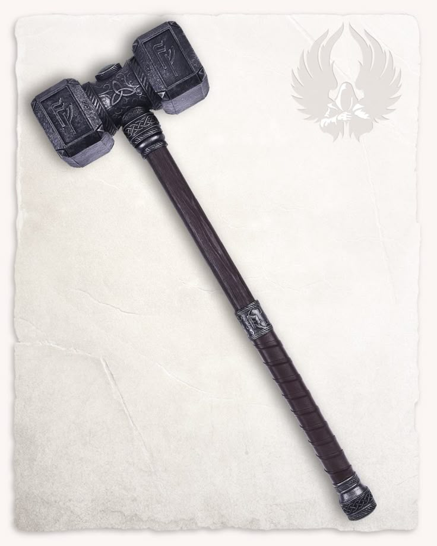
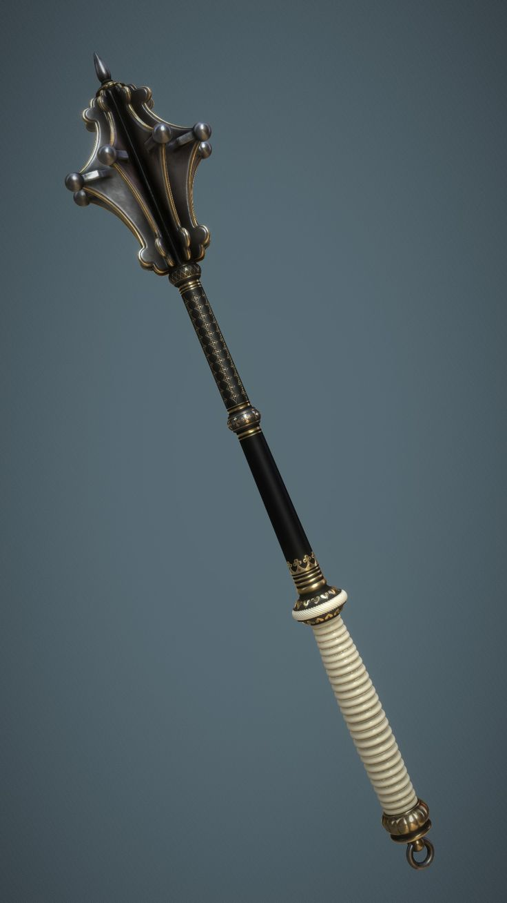
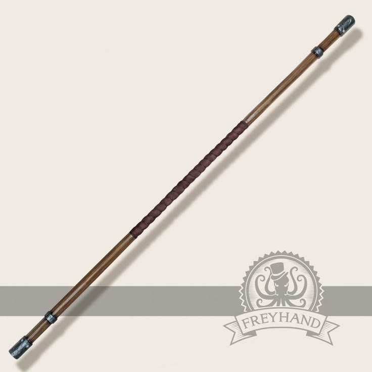
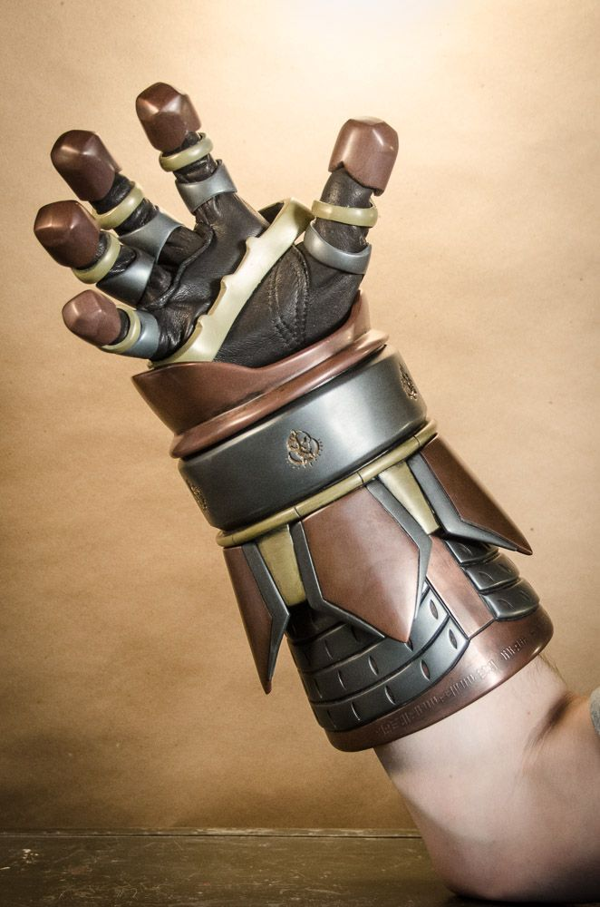
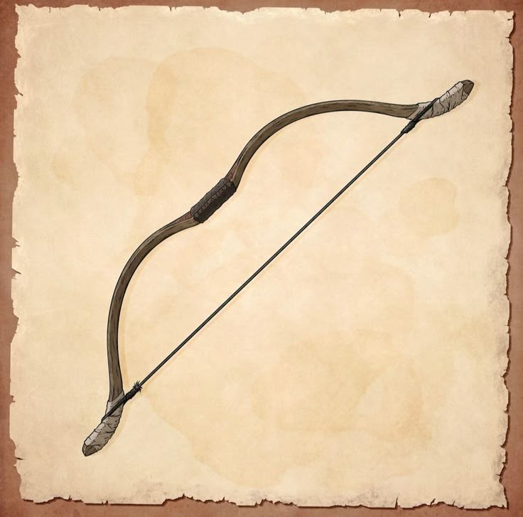
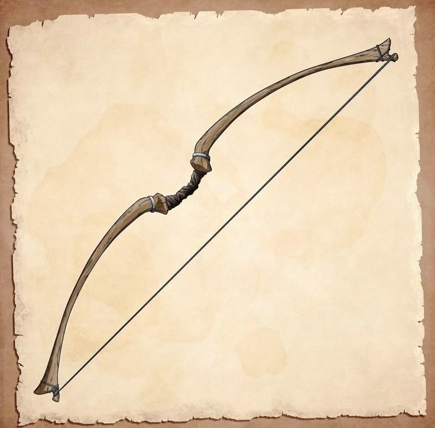

Tipo: Espada longa
Dano: 1d8(1d6)+For/Dez Cortante
Uma vez por rodada caso esteja usando com as duas mãos você pode fazer um ataque capaz de atingir até três oponentes que estejam juntos.

Tipo: Adaga
Dano: 1d6 Perfurante
Pode ser arremessada em um oponente, causando +1 caso acerte.

Tipo: Machado
Dano: 1d10(1d8)+For Cortante
Uma vez por rodada você pode forçar o oponente a rolar um teste de Fortitude, caso o valor seja menor que sua Aura ele sofre de sangramento por uma rodada.

Tipo: Martelo
Dano: 1d10(1d8)+For Contundente
Uma vez por rodada caso você não cause dano em um golpe com essa arma, você pode causar 1 de dano mesmo assim.

Tipo: Massa
Dano: 1d8+For contundente
Causa +2 Contra mortos vivos, dêmonios e seres das trevas

Tipo: Cajado
Dano: 1d6+For/Dez Contundente Mágico
Magias custam 1 de mana a menos para serem conjuradas

Tipo: Manoplas
Dano: 1d6+For Contundente
Uma vez por rodada você pode forçar o oponente a rolar um teste de Fortitude, caso o valor seja menor que sua Aura ele fica atordoado por uma rodada.

Tipo: Arco
Dano: 1d6+Dez Perfurante
Ao atirar uma flecha você pode embuir ela com uma magia de sua escolha.

Tipo: Arco
Dano: 1d8+Dez Perfurante
Ao atirar uma flecha você pode embuir ela com uma magia de sua escolha.
